Abstract
This R Markdown document runs the simulations and recreates all the figures used in Section 5 of the paper ‘Simulation-Based Calibration Checking for Bayesian Computation: The Choice of Test Quantities Shapes Sensitivity’The examples are run using the SBC R package. - consult the Getting Started with SBC vignette for basics of the package.
knitr::opts_chunk$set(cache = TRUE)
library(SBC)
library(ggplot2)
library(patchwork)
library(tidyverse)
library(cmdstanr)
theme_set(cowplot::theme_cowplot())
options(mc.cores = parallel::detectCores(), SBC.min_chunk_size = 5)
library(future)
plan(multisession)
cache_dir <- "./_SBC_cache_ordered_simplex"
fig_dir <- "./_figs"
if(!dir.exists(cache_dir)) {
dir.create(cache_dir)
}
if(!dir.exists(fig_dir)) {
dir.create(fig_dir)
}
devtools::load_all()
hist_plot_width <- 8
hist_plot_height <- 4We recall that the model works over the ordered simplex:
\[ \text{OrdSimplex}_K = \{\mathbf{x} \in \mathbb{R}^K | 0 < x_1 < \ldots < x_K < 1, \sum_{i=1}^K x_i = 1 \} \]
and the full model is
\[ \begin{align} \mathbf{x} &\in \text{OrdSimplex}_4, \pi(\mathbf{x}) \propto \text{Dirichlet(2, 2, 2, 2)} \\ \mathbf{y} &\sim \text{Multinomial(10, x)} \end{align} \]
To generate data we note that due to the prior being symmetric over the unrestricted simplex, we can sample from the prior by taking a draw from the Dirichlet distribution and ordering it (if the prior was not symmetrical, some form of rejection sampling would be necessary).
The code to generate datasets is below:
generate_one_dataset <- function(N, K, prior_alpha = 1) {
x_raw <- MCMCpack::rdirichlet(1, alpha = rep(prior_alpha, K))
x <- sort(x_raw)
observed <- as.integer(rmultinom(1, size = N, prob = x))
list(
variables = list(x = x),
generated = list(K = K, observed = observed, prior_alpha = rep(prior_alpha, K))
)
}
set.seed(56823974)
ds_long <- generate_datasets(
SBC_generator_function(generate_one_dataset, N = 10, K = 4, prior_alpha = 3),
n_sims = 6000)
ds <- ds_long[1:1000]We will use 1000 datasets (the ds variable) for most
checks, but for detailed investigations, we’ll also use the
ds_long version with 6000 datasets.
Additionally, we define derived test quantities for the log prior and the log likelihood:
log_ddirichlet <- function(x, alpha) {
-sum(lgamma(alpha)) + lgamma(sum(alpha)) + sum((alpha - 1) * log(x))
}
dq <- derived_quantities(log_lik = dmultinom(observed, prob = x, log = TRUE),
log_prior = log_ddirichlet(x, prior_alpha),
.globals = "log_ddirichlet")We will not repeat the mathematical description of the individual variants, please refer to the paper.
The Stan code for the min variant of the model is:
cat(readLines("stan/ordered_simplex_min.stan"), sep = "\n")
functions {
//Input: vector of numbers constrained to [0,1]
vector ordered_simplex_constrain_min_lp(vector u) {
int Km1 = rows(u);
vector[Km1 + 1] x;
real remaining = 1; // Remaining amount to be distributed
real base = 0; // The minimum for the next element
for(i in 1:Km1) {
if(u[i] <= 0 || u[i] >= 1) {
reject("All elements of u have to be in [0,1]");
}
int K_prime = Km1 + 2 - i; // Number of remaining elements
//First constrain to [0; remaining / K_prime]
real x_cons = remaining * inv(K_prime) * u[i];
// Jacobian for the constraint
target += log(remaining) - log(K_prime);
x[i] = base + x_cons;
base = x[i];
//We added x_cons to each of the K_prime elements yet to be processed
//remaining -= x_cons * K_prime;
remaining *= 1 - u[i];
}
x[Km1 + 1] = base + remaining;
return x;
}
}
data {
int K;
array[K] int<lower=0> observed;
vector<lower=0>[K] prior_alpha;
}
parameters {
vector<lower=0, upper=1>[K - 1] u;
}
transformed parameters {
simplex[K] x = ordered_simplex_constrain_min_lp(u);
}
model {
x ~ dirichlet(prior_alpha);
observed ~ multinomial(x);
}Compile the model, build the backend
m_min <- cmdstan_model("stan/ordered_simplex_min.stan")## Model executable is up to date!backend_min <- SBC_backend_cmdstan_sample(m_min, chains = 2)Run SBC
res_min <- compute_SBC(ds, backend_min, keep_fits = FALSE, dquants = dq,
cache_location = file.path(cache_dir, "ordered_simplex_min.rds"),
cache_mode = "results")## Results loaded from cache file 'ordered_simplex_min.rds'## - 1 (0%) fits had at least one Rhat > 1.01. Largest Rhat was 1.012.## - 1000 (100%) fits had some steps rejected. Maximum number of rejections was 15.## Not all diagnostics are OK.
## You can learn more by inspecting $default_diagnostics, $backend_diagnostics
## and/or investigating $outputs/$messages/$warnings for detailed output from the backend.plot_rank_hist(res_min)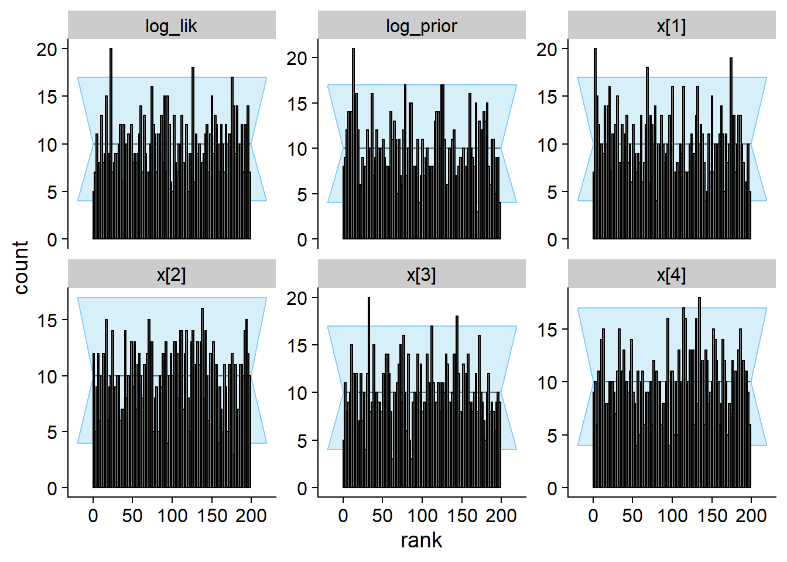
plot_ecdf_diff(res_min)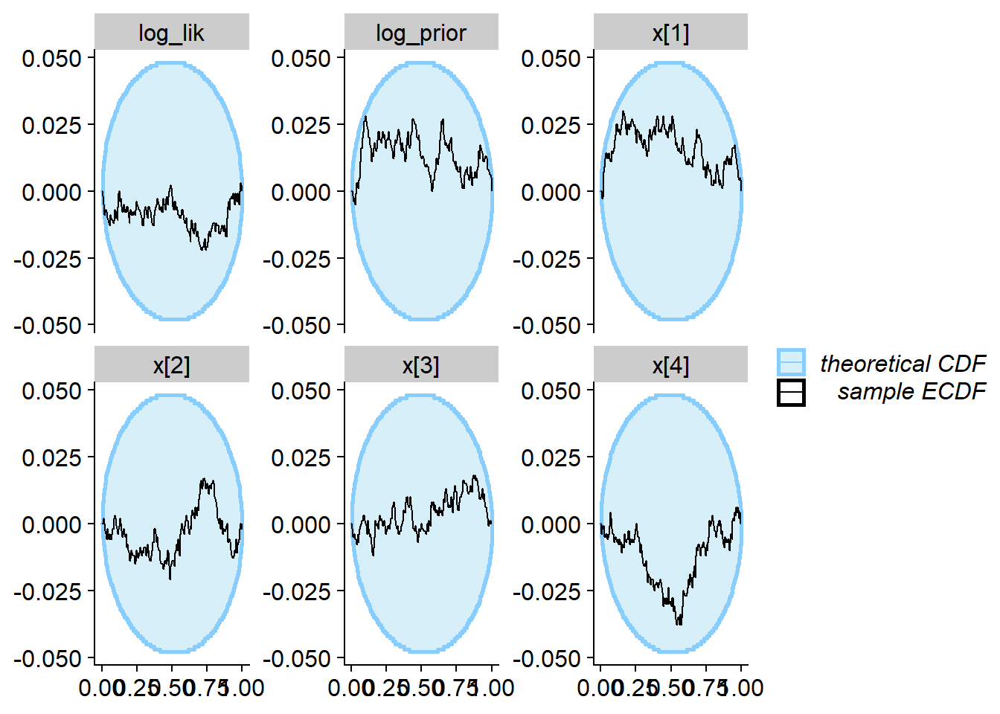
We see that there are no problems apparent after 1000 simulations.
We however also see in the plot below, that the data are not very informative about any of the model parameters.
plot_sim_estimated(res_min, alpha = 0.2)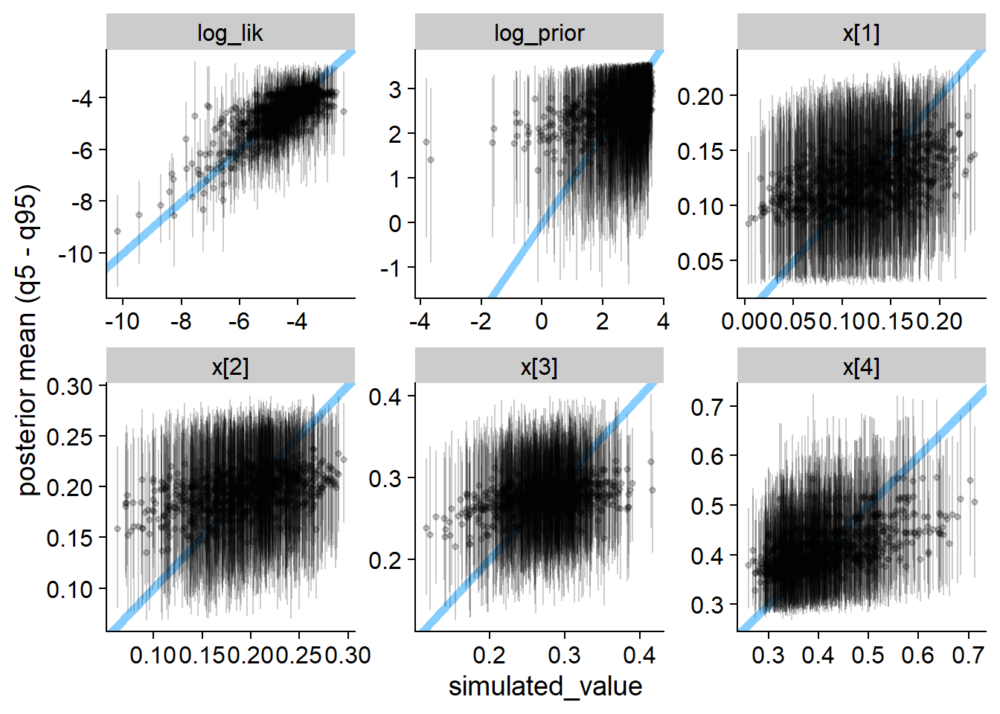
Now, we’ll test the incorrect version of the softmax
approach. The Stan code is:
cat(readLines("stan/ordered_simplex_softmax_bad.stan"), sep = "\n")functions {
vector ordered_simplex_constrain_softmax_lp(vector v) {
int K = size(v) + 1;
vector[K] v0 = append_row(0, v);
// Jacobian
target += sum(v) - (K - 1) * log_sum_exp(v0);
return softmax(v0);
}
}
data {
int K;
array[K] int<lower=0> observed;
vector<lower=0>[K] prior_alpha;
}
parameters {
positive_ordered[K - 1] v;
}
transformed parameters {
simplex[K] x = ordered_simplex_constrain_softmax_lp(v);
}
model {
x ~ dirichlet(prior_alpha);
observed ~ multinomial(x);
}Compile the model, build the backend
m_softmax_bad <- cmdstan_model("stan/ordered_simplex_softmax_bad.stan")## Model executable is up to date!backend_softmax_bad <- SBC_backend_cmdstan_sample(m_softmax_bad, chains = 2)Run SBC (we’re using ds_long to show some long-run
behaviour)
res_softmax_bad <- compute_SBC(ds_long, backend_softmax_bad, keep_fits = FALSE, dquants = dq,
cache_location = file.path(cache_dir, "ordered_simplex_softmax_bad.rds"),
cache_mode = "results")## Results loaded from cache file 'ordered_simplex_softmax_bad.rds'## - 45 (1%) fits had at least one Rhat > 1.01. Largest Rhat was 1.018.## - 9 (0%) fits had divergent transitions. Maximum number of divergences was 1.## - 30 (0%) fits had some steps rejected. Maximum number of rejections was 1.## Not all diagnostics are OK.
## You can learn more by inspecting $default_diagnostics, $backend_diagnostics
## and/or investigating $outputs/$messages/$warnings for detailed output from the backend.plot_rank_hist(res_softmax_bad[1:1000])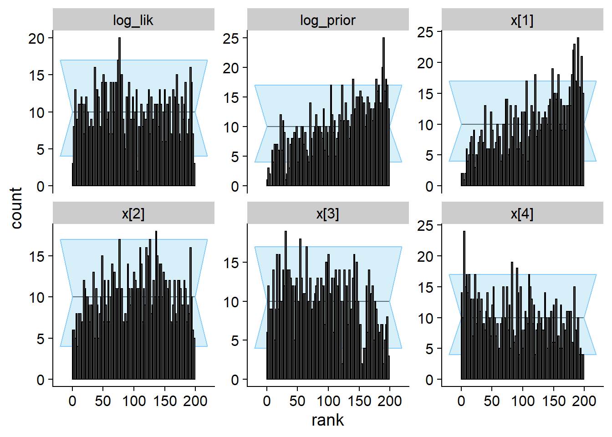
plot_ecdf_diff(res_softmax_bad[1:1000])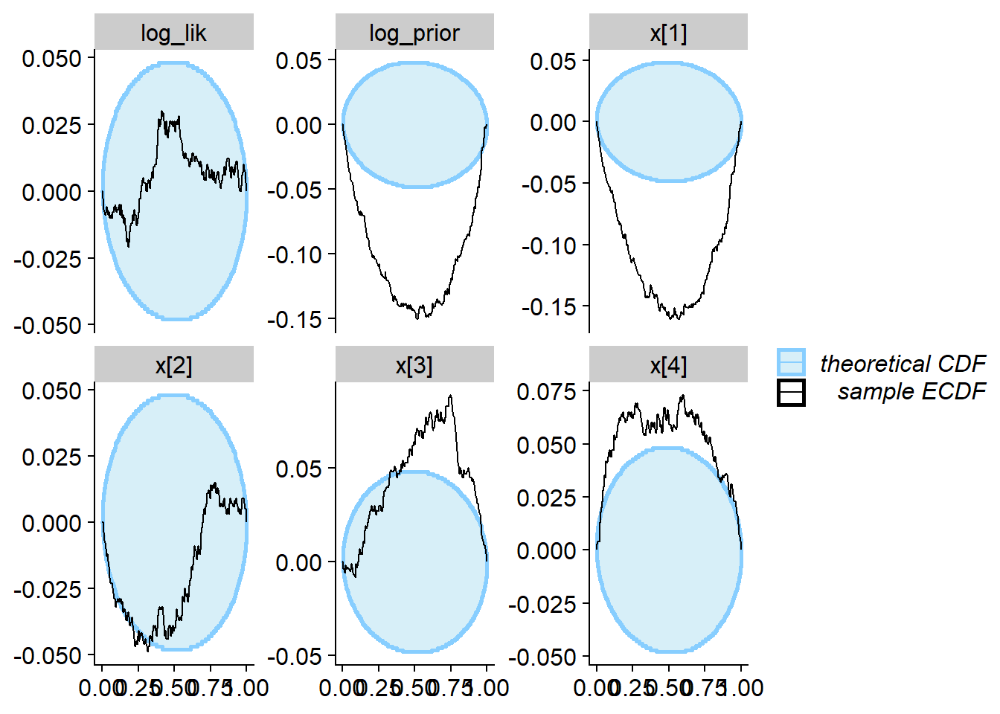
We see that the true value vs. fitted posterior is very quite to the correct case - any single simulation is likely to get an OK-ish recovery of the true parameters and so would be unlikely to discover the problem.
plot_sim_estimated(res_softmax_bad, alpha = 0.2)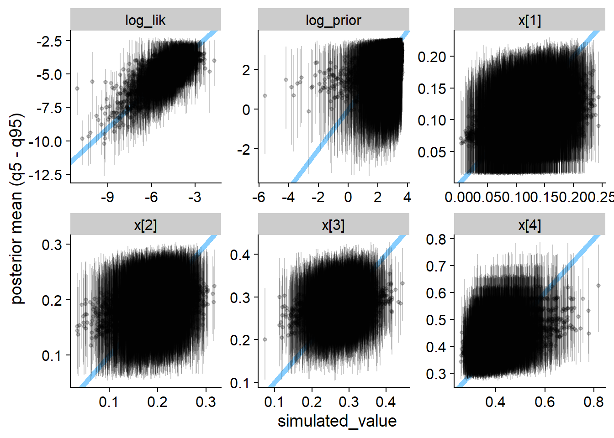
Here we show the history of the gamma statistic for various quantities. Eventually all quantities detect the problem, but note the different horizontal axis between top row (quantities that detect the problem quickly) and bottom row (quantities that detect the problem slowly). The vertical red dashed line marks 400 simulations.
shared_mark <- geom_vline(color = "red", linetype = "dashed", xintercept = 400)
ylim <- c(-28, 5)
plot_softmax_bad_quick <- plot_log_gamma_history(res_softmax_bad[1:400], variables_regex = "log_prior|x\\[1|3|4", ylim = ylim) + theme(axis.title = element_blank()) + shared_mark
plot_softmax_bad_slow <- plot_log_gamma_history(res_softmax_bad[1:3000], variables_regex = "log_lik|x\\[(2)\\]", ylim = ylim) + theme(axis.title = element_blank()) + shared_mark
#axis title: https://stackoverflow.com/questions/65291723/merging-two-y-axes-titles-in-patchwork
p_label <- ggplot(data.frame(l = "Log Gamma - Threshold", x = 1, y = 1)) +
geom_text(aes(x, y, label = l), angle = 90, size = 5) +
theme_void() +
coord_cartesian(clip = "off")
p_hist_softmax_bad <- p_label + (plot_softmax_bad_quick / plot_softmax_bad_slow) + plot_layout(widths = c(0.4, 25))
p_hist_softmax_bad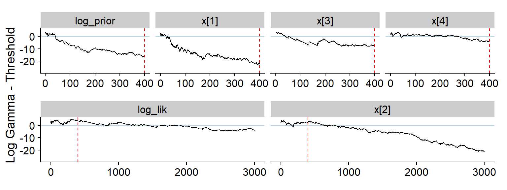
ggsave(file.path(fig_dir, "hist_softmax_bad.pdf"), p_hist_softmax_bad, width = 8, height = 3)Now, the correct version of the softmax approach. The
Stan code is:
cat(readLines("stan/ordered_simplex_softmax.stan"), sep = "\n")functions {
vector ordered_simplex_constrain_softmax_lp(vector v) {
int K = size(v) + 1;
vector[K] v0 = append_row(0, v);
// Jacobian
target += sum(v) - K * log_sum_exp(v0);
return softmax(v0);
}
}
data {
int K;
array[K] int<lower=0> observed;
vector<lower=0>[K] prior_alpha;
}
parameters {
positive_ordered[K - 1] v;
}
transformed parameters {
simplex[K] x = ordered_simplex_constrain_softmax_lp(v);
}
model {
x ~ dirichlet(prior_alpha);
observed ~ multinomial(x);
}(the only change is using K instead of
K - 1 on line 6.
Compile the model, build the backend
m_softmax <- cmdstan_model("stan/ordered_simplex_softmax.stan")## Model executable is up to date!backend_softmax <- SBC_backend_cmdstan_sample(m_softmax, chains = 2)Run SBC
res_softmax <- compute_SBC(ds, backend_softmax, keep_fits = FALSE, dquants = dq,
cache_location = file.path(cache_dir, "ordered_simplex_softmax.rds"),
cache_mode = "results")## Results loaded from cache file 'ordered_simplex_softmax.rds'## - 4 (0%) fits had at least one Rhat > 1.01. Largest Rhat was 1.012.## - 2 (0%) fits had divergent transitions. Maximum number of divergences was 1.## - 9 (1%) fits had some steps rejected. Maximum number of rejections was 1.## Not all diagnostics are OK.
## You can learn more by inspecting $default_diagnostics, $backend_diagnostics
## and/or investigating $outputs/$messages/$warnings for detailed output from the backend.plot_rank_hist(res_softmax)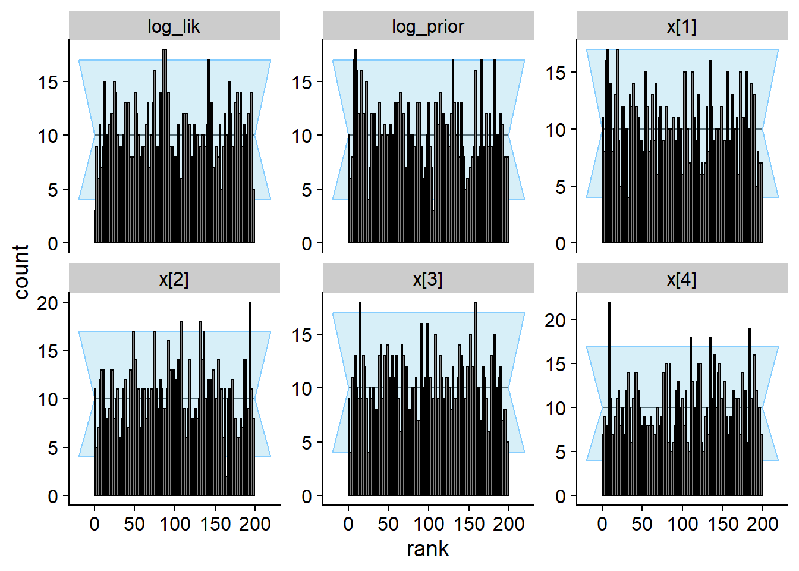
plot_ecdf_diff(res_softmax)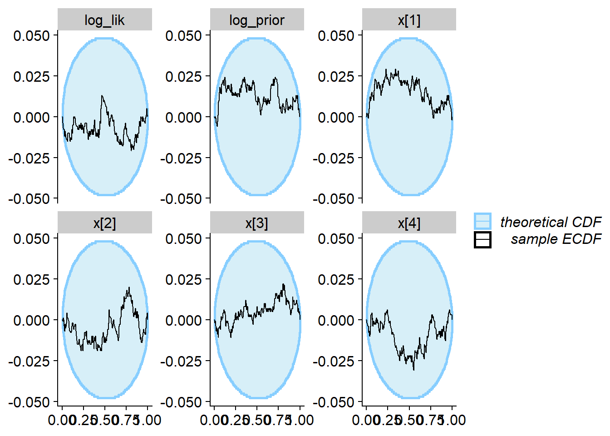
plot_sim_estimated(res_softmax, alpha = 0.2)Finally the gamma variant. The Stan code is:
cat(readLines("stan/ordered_simplex_gamma.stan"), sep = "\n")data {
int K;
array[K] int<lower=0> observed;
vector<lower=0>[K] prior_alpha;
}
parameters {
positive_ordered[K] w;
}
transformed parameters {
simplex[K] x = w / sum(w);
}
model {
w ~ gamma(prior_alpha, 1);
observed ~ multinomial(x);
}Compile the model, build the backend
m_gamma <- cmdstan_model("stan/ordered_simplex_gamma.stan")## Model executable is up to date!backend_gamma <- SBC_backend_cmdstan_sample(m_gamma, chains = 2)Run SBC
res_gamma <- compute_SBC(ds, backend_gamma, keep_fits = FALSE, dquants = dq,
cache_location = file.path(cache_dir, "ordered_simplex_gamma.rds"),
cache_mode = "results")## Results loaded from cache file 'ordered_simplex_gamma.rds'## - 3 (0%) fits had at least one Rhat > 1.01. Largest Rhat was 1.013.## - 34 (3%) fits had some steps rejected. Maximum number of rejections was 1.## Not all diagnostics are OK.
## You can learn more by inspecting $default_diagnostics, $backend_diagnostics
## and/or investigating $outputs/$messages/$warnings for detailed output from the backend.plot_rank_hist(res_gamma)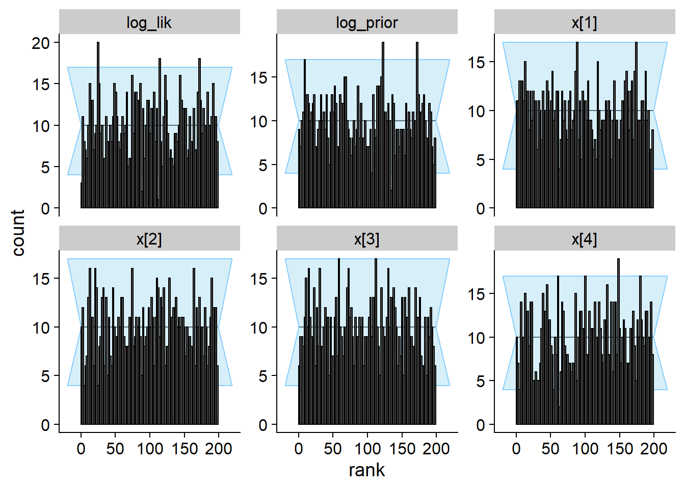
plot_ecdf_diff(res_gamma)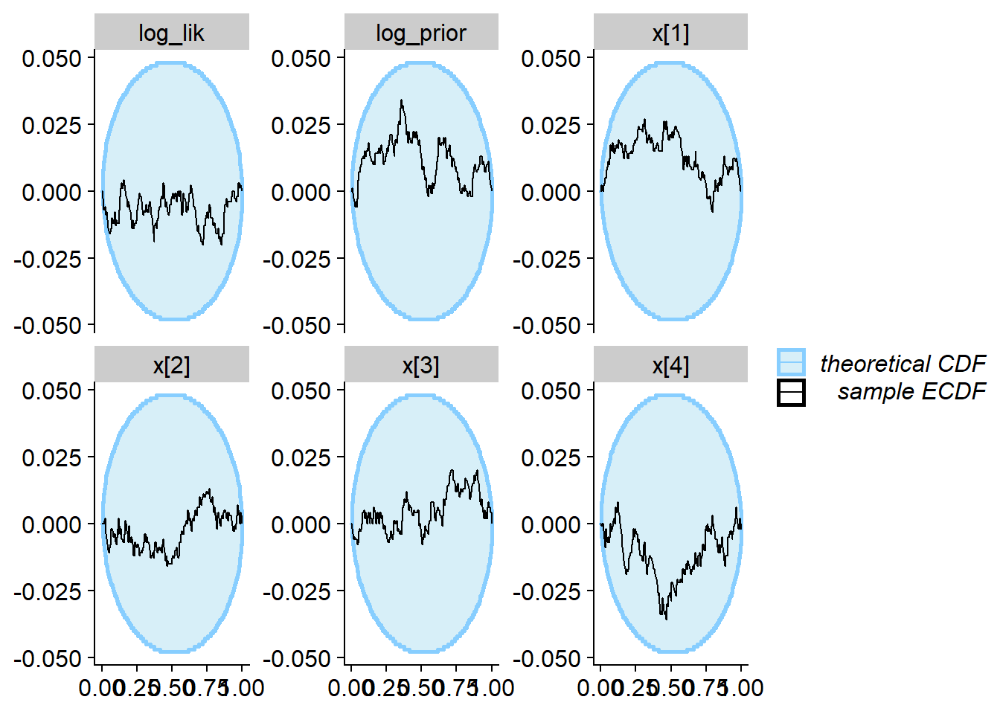
plot_sim_estimated(res_gamma, alpha = 0.2)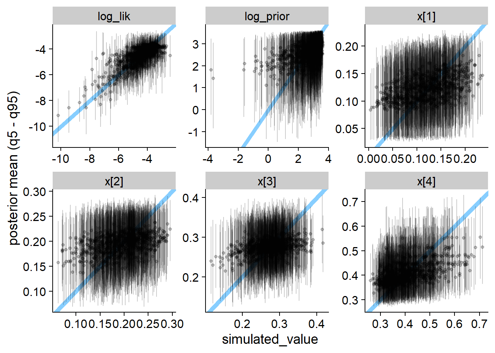
SBC gave us a simulation study for free, so let us examine some performance characteristics (for the correct implementations only):
all_results <- list("softmax" = res_softmax,
"min" = res_min,
"gamma" = res_gamma)
perf_from_result <- function(res, variant) {
ess_res <- res$stats %>%
filter(grepl("^x", variable)) %>%
group_by(sim_id) %>%
summarise(min_x_ess = min(ess_bulk))
stats <- res$backend_diagnostics %>%
inner_join(res$default_diagnostics, by = "sim_id") %>%
inner_join(ess_res, by = "sim_id")
stopifnot(identical(stats$sim_id, res$backend_diagnostics$sim_id))
stats$variant <- variant
stats
}
performance_data <- all_results %>% imap_dfr(perf_from_result) %>%
mutate(ess_per_time = min_x_ess / max_chain_time)performance_data %>% ggplot(aes(x = ess_per_time)) + geom_histogram(bins = 50) + facet_wrap(~variant, ncol = 1)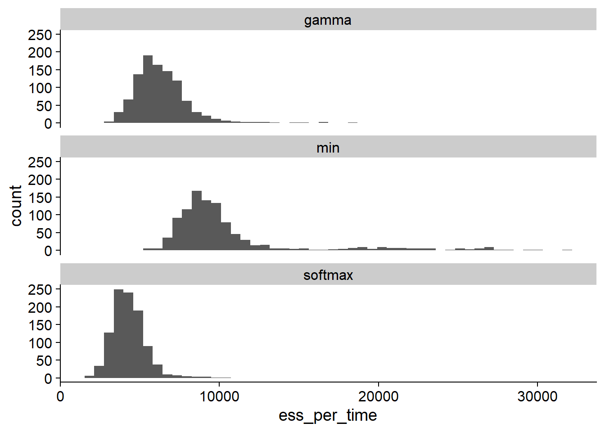
performance_data %>% group_by(variant) %>%
mutate(high_rhat = max_rhat > 1.01, divergences = n_divergent > 0,
non_converged = high_rhat | divergences) %>%
summarise(`Mean ESS per s` = mean(ess_per_time), `High Rhat` = scales::percent(mean(high_rhat), accuracy = 0.1),
`Divergent transitions` = scales::percent(mean(divergences), accuracy = 0.1),
`Any convergence problem` = scales::percent(mean(non_converged), accuracy = 0.1)
)## # A tibble: 3 × 5
## variant `Mean ESS per s` `High Rhat` `Divergent transitions` `Any convergence problem`
## <chr> <dbl> <chr> <chr> <chr>
## 1 gamma 6295. 0.3% 0.0% 0.3%
## 2 min 10491. 0.1% 0.0% 0.1%
## 3 softmax 4304. 0.4% 0.2% 0.6%